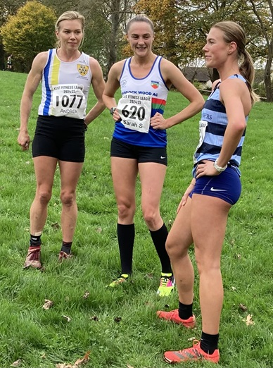
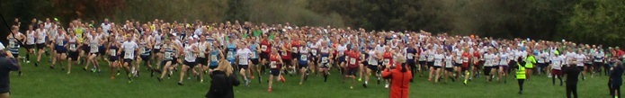

The first race of the 2024/25 Kent Fitness League took place in Swanley Park on Sunday November 10th, writes Jim Knight. A record 640 runners, including 37 from Sevenoaks AC, lined up for the start at 11 a.m. We stood on the start line for two minutes in silence to contemplate the horrors of war and pay our respects to those who fought for our freedom. Then the whistle blew, and the race started.
Three laps of the park – undulating, grassy, and quite dry overall - a fast 5.5-mile course. The rain held off and the runners enjoyed pleasant cool conditions.
29 minutes and 47 seconds later, 28-year-old Alex Cameron from Dartford Harriers crossed the line to win by 3 seconds from Keith Fairbank of Istead & Ifield Harriers (interestingly the winning time was exactly the same as last year).
Just 34 seconds later, 47-year-old Jamie Philip from Sevenoaks AC had an outstanding run to finish in 6th place. He was followed by Paul Fanti (44th), William Palmer (52nd), and Luke Green (61st) and Steven Hough (62nd). The other scorers in the men’s team Keith Dowson (66th), Michael Lochead (67th) and Harvey Taylor (74th). This placed the men’s team 3rd, behind Dartford Harriers and Petts Wood Runners – their best start to the season for several years.

But the real stars of the day were the victorious Sevenoaks women who won their race, beating a very strong team from Petts Wood Runners and all the other 16 teams. Sevenoaks’ Andrea Berquez had an outstanding run to win in a time of 33.15 – over a minute faster than last year. The other scorers in the SAC winning women’s team were Hannah Sangan (12th), Nicola Glover (18th), Caroline Fenwick (24th) and Cath Linney (31st).
With the women’s team first and the men’s team 3rd, the combined team came 2nd overall. At this stage last year, the team was placed 5th – so a brilliant start to the season.
The SAC results were:
| Ov Pos | Lg Pos | Bib | Runner | Age | Time | Club | Score | Rtg | # |
|---|---|---|---|---|---|---|---|---|---|
| 6 | 6 | 894 | Jamie Philip | 47 | 30:21 | Sevenoaks AC | V40:1 | 98.71 | 4 |
| 44 | 44 | 860 | Paul Fanti | 51 | 33:14 | Sevenoaks AC | V50:1 | 88.95 | 3 |
| 45 | 1 | 1077 | Andrea Berquez | 39 | 33:15 | Sevenoaks AC | V35 | 100.00 | 13 |
| 53 | 52 | 893 | William Palmer | 52 | 33:44 | Sevenoaks AC | V50:2 | 86.89 | 10 |
| 65 | 61 | 866 | Luke Green | 33 | 34:22 | Sevenoaks AC | M1 | 84.58 | 2 |
| 66 | 62 | 873 | Steven Hough | 51 | 34:26 | Sevenoaks AC | V40:2 | 84.32 | 2 |
| 71 | 66 | 857 | Keith Dowson | 61 | 34:50 | Sevenoaks AC | V60 | 83.29 | 18 |
| 72 | 67 | 881 | Michael Lochead | 43 | 34:56 | Sevenoaks AC | M2 | 83.03 | 23 |
| 79 | 74 | 902 | Harvey Taylor | 20 | 35:13 | Sevenoaks AC | M3 | 81.23 | 16 |
| 94 | 87 | 874 | Andrew Hutchinson | 45 | 35:40 | Sevenoaks AC | NS | 77.89 | 24 |
| 113 | 12 | 897 | Hannah Sangan | 30 | 36:25 | Sevenoaks AC | F1 | 95.62 | 7 |
| 126 | 113 | 890 | Sebastian Naughton | 50 | 36:55 | Sevenoaks AC | NS | 71.21 | 18 |
| 131 | 117 | 907 | Daniel Witt | 49 | 37:10 | Sevenoaks AC | NS | 70.18 | 73 |
| 137 | 18 | 864 | Nicola Glover | 36 | 37:22 | Sevenoaks AC | F2 | 93.23 | 16 |
| 143 | 124 | 856 | Chris Desmond | 61 | 37:43 | Sevenoaks AC | NS | 68.38 | 90 |
| 160 | 24 | 861 | Caroline Fenwick | 46 | 38:18 | Sevenoaks AC | V45 | 90.84 | 13 |
| 177 | 31 | 880 | Catherine Linney | 55 | 38:48 | Sevenoaks AC | V55 | 88.05 | 50 |
| 183 | 33 | 896 | Joanne Rodda | 48 | 39:01 | Sevenoaks AC | NS | 87.25 | 6 |
| 199 | 162 | 885 | Anton Mauve | 58 | 39:25 | Sevenoaks AC | NS | 58.61 | Debut |
| 213 | 41 | 1078 | Sophie Day | 36 | 39:50 | Sevenoaks AC | NS | 84.06 | Debut |
| 214 | 173 | 844 | Brian Allen | 52 | 39:52 | Sevenoaks AC | NS | 55.78 | 7 |
| 226 | 44 | 848 | Elizabeth Bull | 37 | 40:06 | Sevenoaks AC | NS | 82.87 | Debut |
| 234 | 188 | 859 | Andrew Evans | 54 | 40:10 | Sevenoaks AC | NS | 51.93 | 58 |
| 237 | 47 | 863 | Vanessa Gilmartin | 49 | 40:21 | Sevenoaks AC | NS | 81.67 | 34 |
| 246 | 199 | 869 | Rob Hadden | 56 | 40:32 | Sevenoaks AC | NS | 49.10 | Debut |
| 250 | 201 | 878 | Leonard Lai King | 45 | 40:41 | Sevenoaks AC | NS | 48.59 | 18 |
| 267 | 216 | 875 | David Killpack | 39 | 41:21 | Sevenoaks AC | NS | 44.73 | 11 |
| 277 | 55 | 862 | Heather Fitzmaurice | 54 | 41:38 | Sevenoaks AC | NS | 78.49 | 81 |
| 307 | 243 | 882 | Alan Male | 54 | 42:34 | Sevenoaks AC | NS | 37.79 | 9 |
| 335 | 82 | 1083 | Bridgit Weekes | 66 | 43:41 | Sevenoaks AC | NS | 67.73 | 26 |
| 346 | 84 | 905 | Rosie Williams | 55 | 44:12 | Sevenoaks AC | NS | 66.93 | Debut |
| 355 | 267 | 871 | Simon Hallpike | 71 | 44:30 | Sevenoaks AC | NS | 31.62 | 62 |
| 356 | 268 | 849 | Peter C | 30 | 44:32 | Sevenoaks AC | NS | 31.36 | Debut |
| 397 | 106 | 845 | Clare Ambrose | 56 | 45:42 | Sevenoaks AC | NS | 58.17 | Debut |
| 462 | 144 | 865 | Glenda Goscomb | 66 | 48:15 | Sevenoaks AC | NS | 43.03 | 7 |
| 529 | 348 | 876 | Jim Knight | 73 | 51:54 | Sevenoaks AC | NS | 10.80 | 7 |
| 620 | 383 | 901 | Lionel Stielow | 75 | 1:00:54 | Sevenoaks AC | NS | 1.80 | 28 |

The Kent Fitness League is a series of cross-country races between the 18 registered Athletics Clubs in Kent. Any number of club members can compete, but 13 are needed to score in the team competition – 8 men (of whom two must be V40 and two V50 and one V60) and 5 women (of whom one must be V35 and one V45 and one V55). The next race is on Sunday Nov 24th in Oxleas Woods, Eltham.